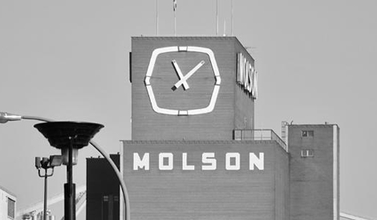

In 1786 a young John Molson at the ripe age of 18 sailed to Canada from England to open a brewery. He succeeded, founding the Molson brewery, the oldest brewery in North America and the second oldest company in Canada. In 1903 they created their first "Molson Export" brew, this was a refreshing golden ale with a rich taste.
In 1950 Molson made the decision to install a clock to the side of their Montreal factory. This was Quebec's largest functioning clock and was visible from up to 12 km away. This became a signature piece of their modern logo.
In 1957 Molson Canadian co-purchased the Canadian Arena, and in part the hockey club, Montreal Canadiens. They also partnered with the Toronto Maple Leafs a decade later. These business descions further solidified Molson into canadian culture.
Molson Canadian is still a dominant brand today, a staple in the Canadian beer market. The brand is iconic for "I am Canadian" advertisments, Red beer fridges, and their large clock in Quebec, all staples of the titan of industry which originated from a young man with a dream.